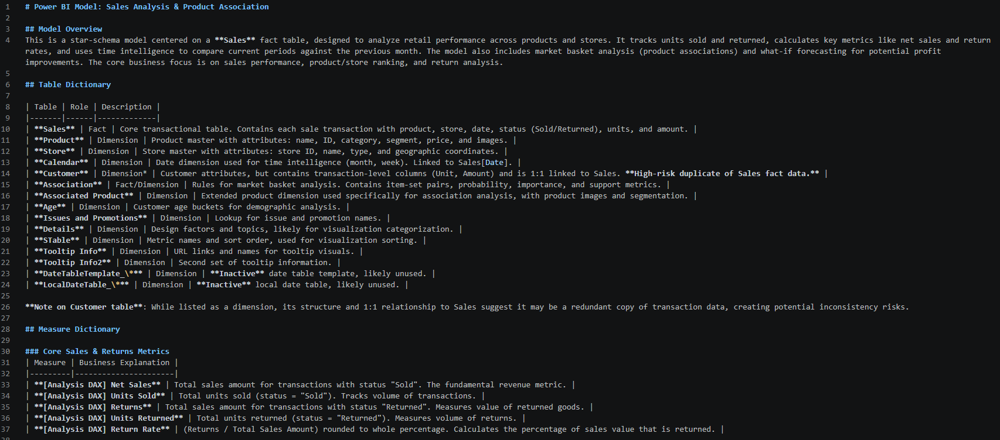
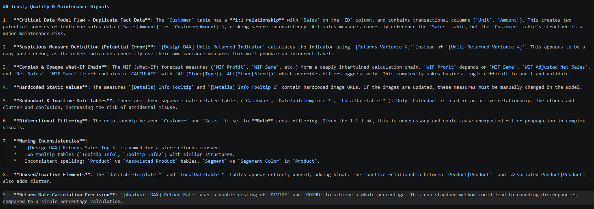

Niemand weet wat een measure echt doet
De DAX zit in iemands hoofd of is nooit gedocumenteerd. Nieuwe mensen tasten in het duister.
Dashboards bouwen wordt een knopdruk. Wat schaars blijft, is weten of de cijfers eronder kloppen. AVDLData leest je Power BI-model, legt elke measure in mensentaal uit en laat zien waar je het niet kunt vertrouwen.
1 extract_measures.py 2 from pbixray import PBIXRay 3 model = PBIXRay("report.pbix") 4 docs = explain(model.dax_measures) 5 flags = check_quality(model)
Power BI-modellen groeien, mensen vertrekken, en niemand weet nog precies wat er onder de motorkap gebeurt. Daar ontstaat twijfel — en twijfel kost beslissingen.
De DAX zit in iemands hoofd of is nooit gedocumenteerd. Nieuwe mensen tasten in het duister.
Dezelfde KPI is op meerdere plekken anders gedefinieerd. Welk cijfer klopt nu eigenlijk?
Copy-paste-bugs, verkeerde sleutels, dubieuze relaties. Pas als de cijfers "raar" lijken, valt het op.
Je geeft je model, AVDLData doet de rest. Alleen de modelstructuur wordt gelezen — nooit je bedrijfsdata.
De tool leest je .pbix en haalt de tabellen, kolommen, measures (DAX) en relaties eruit — zonder Power BI Desktop, zonder je data.
Elke measure krijgt een uitleg die ook een niet-technische collega begrijpt. In het Nederlands of Engels — één scan, elke taal.
Inconsistente definities, copy-paste-fouten, foute datatypes, bidirectioneel filteren, fragiele measure-ketens — concreet benoemd.
Geen mooie belofte, maar proof-of-work. Ik richtte de tool op het officiële Power BI-voorbeeldmodel van Microsoft — en hij vond meteen dingen die er niet hoorden te zitten.
AVDLData is dag 1 en wordt openlijk gebouwd. Volg de bouw mee — of laat je eigen model scannen.
Schermafdrukken van een echte scan op Microsoft's Sales & Returns sample: het datawoordenboek in mensentaal, en de vertrouwens-signalen die de tool flagde.


Gebouwd om snel te leren en eerlijk te leveren.
AVDLData is geen bureau met lagen ertussen. Je werkt direct met de maker die de vraag scherp maakt, de tool bouwt, de data controleert en uitlegt hoe je ermee verder kunt.
Mijn achtergrond ligt in IT, onboarding en projectmanagement. Daar ontdekte ik dat de meeste tijd niet zit in gebrek aan data, maar in handmatig werk, Excel-chaos en rapportages die niemand meer durft te vertrouwen.
Daarom ben ik AVDLData gestart: praktische tools die data begrijpelijk en betrouwbaar maken, zonder dikke trajecten of vage beloftes.
Leer door te bouwen, niet door cursussen te stapelen. — github.com/avdldata
Stuur je model (of een vraag erover). Ik scan het, en je krijgt een helder datawoordenboek plus de plekken waar je de cijfers misschien niet kunt vertrouwen.